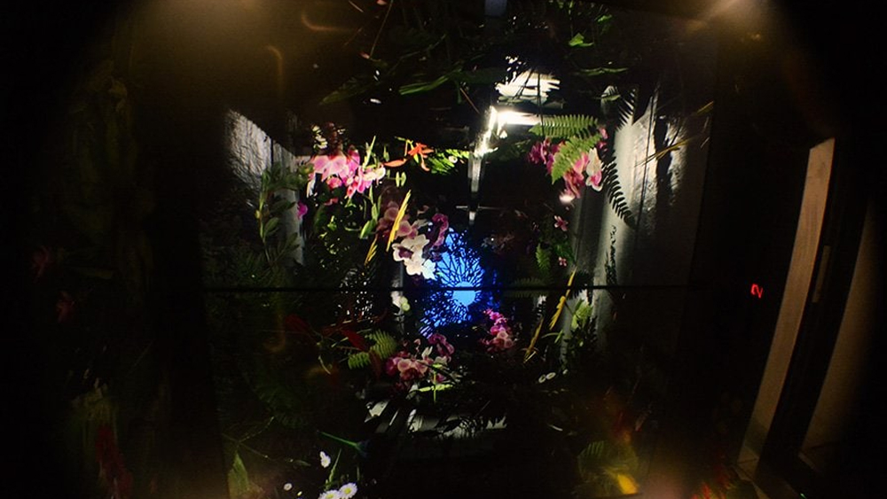

Sky Portal (2019). Located at Gardens by the Bay, one of the top 3 attractions in Singapore, we launched an interactive and augmented experience called Sky Portal, which comprised two installations inside the lift and at the rooftop area. Sky Portal transported us into another dimension between thoughts, peoples, and realms. While the ceiling display in the lift gave the visitors a sneak peek into the unreal journey inside the giant tree trunk, the four digital displays at the rooftop transformed the beautiful vista of the Singapore Bay area into supernatural scenery. Visitors would also interact with the alternative reality through the sensor systems installed.

The augmented reality show on the ceiling of the lift